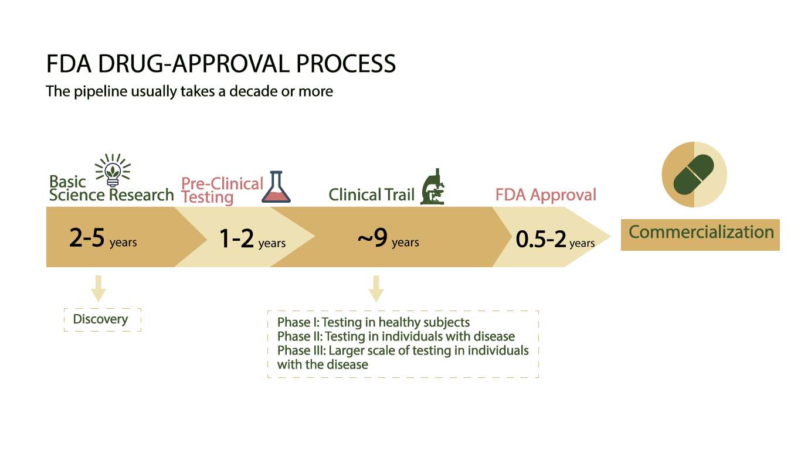
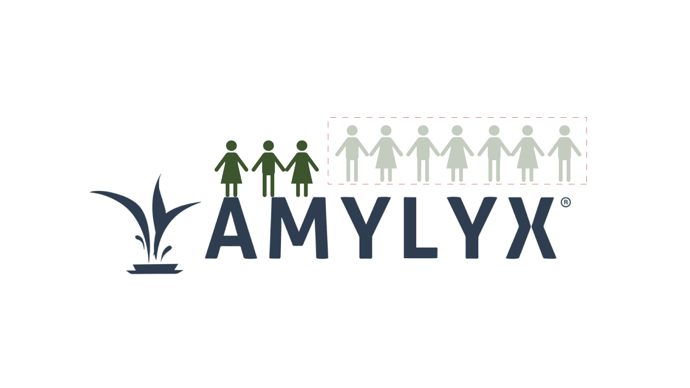

According to MassBioEd, 19% of degree holders work in biotech.
23% in healthcare.
14% in educational institutions.
44% of degree holders ended up working in non-life science industries, such as real estate, finance, and transportation.
The same stubborn mold kept reappearing in the cell incubator. No matter how diligently April Qian and her colleagues sanitized the lab, reset their experiments, and searched for the cause, it always found its way back.
“It was frustrating,” said Qian.
Along with other frustrating moments in the research process, April Qian—a Middlebury College graduate with degrees in Biochemistry and Molecular Biology—made the decision to not pursue the biotech industry, a field she had dreamed of joining since high school.
Repetitive day to day work, lack of immediate positive feedback in long term research, shifting interests, and the invisible weight of pressure were among the reasons for her departure. But Qian’s change of heart is far from rare.
Of the more than 200,000 life science degree holders in Massachusetts, four out of five choose not to pursue careers in the biotech industry according to the Massachusetts Biotechnology Education Foundation (MassBioEd) . Those who opt for other paths often cite the rigorous degree requirements, the desire for the mental satisfaction that comes from seeing quick and positive outcomes, and the concern of being laid off. Despite recent layoffs, however, the industry still projects a high demand for talent, with a projected 27% job growth for scientists in Massachusetts from 2023 to 2033, according to MassBioEd, to drive the research and development of new drugs and therapies.
Where did the four out of five degree holders who chose not to pursue biotech end up?
According to MassBioEd, 19% of degree holders work in biotech.
23% in healthcare.
14% in educational institutions.
44% of degree holders ended up working in non-life science industries, such as real estate, finance, and transportation.
Kuijun Wang, a student from China who graduated from Georgetown University with a biostatistics degree, is one of those who switched to healthcare.
“I wanted to work for biotech or biopharmaceutical companies,” said Wang, yet says she was limited because of her lack of a PhD. That’s not the case for other life science industries. Wang has found work as a software engineer at Fathom, a healthcare company in California.
“I think for R&D (research and development) a PhD is seen as pretty mandatory these days,” said Julio Gagne, a vice president at Kite Pharma based in California. “A doctorate degree is especially important to break into leadership.”
However, the five years, or even longer, needed to get a doctorate is challenging, given the limited stipend and the repeated need to cope with experimental failures in research. Gagne described that doing research in the biotech as being like a soccer game.
“Imagine if you were a soccer player on a team that loses every game for three years,” said Gagne. “It would be incredibly demoralizing.”
Qian agrees with Gagne’s metaphor; two weeks of struggling with mold felt like losing the same soccer game repeatedly in the same place. Like her, some life science students don’t want to “lose the game repeatedly in the same place” but rather need mental satisfaction from immediate positive results choose other career paths.
The journey of obtaining a doctorate can be viewed as an opportunity cost when considering the limited stipend in a Ph.D. program, especially since graduates can earn more by pursuing other jobs in healthcare.
“I don’t want to take the minimal stipend for a five-year Ph.D., when alternatively I can make six figures as a machine learning engineer,” said Wang, who once considered pursuing a doctoral degree but gave up.
For the one in five students who remain in the biotech industry, there are concerns about finding a job given the layoffs occurring in the industry.
“I have seen students who are worried about whether they can find a job,” said Jared Auclair, director of the bioinnovation department at Northeastern University, “and how long they can stay in that job.”
Since the beginning of 2024, biotech companies—ranging from large corporations, including Moderna, Pfizer, and Novartis, to startups—have all announced layoffs, according to a live tracker in Fierce Biotech.
Gagne believes the job losses may be a result of the industry's nature of “continuous failure.” Creating new stuff is always hard and that’s especially true in biotech. According to the Biotechnology Innovation Organization, overall success rates for a new drug to make it from Phase I testing to final FDA approval is only 9%.
The pipeline for a new drug, from discovery to post-marketing, usually takes a decade or more and costs millions of dollars. With all the investment of money and time, layoffs or even bankruptcy often occur if a drug fails, especially in small biotech companies.
For example, on April 4, Amylyx Pharmaceuticals, a biopharmaceutical company in Cambridge, failed a Phase III trial for a drug treating ALS, also known as Lou Gehrig’s disease. As a result, they pulled the ALS therapy off the market and are laying off about 70% of their staff.
Gagne thinks that being laid off doesn’t mean someone needs to leave biotech.
He was laid off while working as an executive director at ImmunoGen, a biotech company in Waltham, Massachusetts when their leading drug failed in Phase III trials. On the verge of bankruptcy, they laid off half of the staff. Later, they redesigned the experiment, passed Phase III, and the company raised funds and is now doing well. Gagne’s current firm, Kite, is also undergoing layoffs.
“We laid off, I think 7% or something like that. But then we put in about 2% brand new jobs,” said Gagne. “It was more of a restructuring. We wanted to create some new jobs and some of the people that were laid off were able to take some of these new jobs.”
Gagne believes that the high layoff rate in data may be a “coincidence” as many companies are laying off or restructuring their businesses, which Auclair also agrees with.
No matter if it is a “coincidence” or not, layoffs have affected many people. Stanley Gill is one of them.
Gill was shocked and frustrated when he was laid off from his first post-doctoral industry job just 10 months after graduating from Harvard University with a doctorate in Biological and Biomedical Sciences.
"I knew there might be layoffs, but I didn't expect it would happen to me," Gill said.
Gill believes that part of the current layoffs resulted from overhiring during the COVID-19 pandemic, when a surge of funds flowed into biotech as venture capitalists saw potential high returns because “people ‘discovered’ biotech was something worth investing in to save society, but now there’s a contraction in jobs because of there being less investment funds in general.”
The data also says that.
An industry analysis from JLL reveals that nationwide venture capital investments in biotech peaked at over $45 billion in 2021. This influx of funding spurred job growth, with life sciences employment in Massachusetts rising by 11.6% from 2021 to 2023, according to MassBioEd.
In 2024, projected venture capital investments decreased to $28 billion. With reduced funding, biotech companies, particularly startups, are hiring fewer people. Recent job growth has slowed, increasing by only 2.5% in 2023.
"Companies now have less money than in 2021," said Aaron Larsen, the Chief Scientific Officer at Circle Labs Bio, a biotech startup in Cambridge. "So we are more cautious about hiring."
Although the biotech industry is facing challenges, the future demand for life science talent remains high due to continued investment from venture capital and the need for new drugs, according to MassBioEd.
Between 2023 and 2033, biotech companies in Massachusetts are projected to add 7,260 management positions, the largest increase among job categories. Scientist roles follow closely, with an expected increase of 7,216 positions. Math and statistics roles are anticipated to have the highest growth rate within the industry, projected at 53%.
Gagne and Auclair both are optimistic about the industry in the future.
“Biotech is a recession-proof industry, said Gagne. “People get sick no matter how [is] the economy.”
“Vast majority” of Auclair’s students were still able to land jobs in the biotech in about six months despite “it may not be their dream jobs at the first day.”
Auclair also thinks that there are many skill-based jobs in the biotech that don’t require a doctorate.
“Biotech is is a vast industry. There's jobs in R&D which typically require a Ph.D. There's jobs in quality control, regulatory affairs,” said Auclair. “So the majority of the jobs in the biotech industry actually don't require a Ph.D. bachelors degree is good enough."
Although the industry is going through a tough time, as noted by Gagne, Auclair, and Gill, Gill remains actively engaged in the job market.
“It is my passion,” said Gill, “my work is actually helping people.”
Produced by candidates for the MS degree in the Media Innovation & Data Communication program at the Northeastern University School of Journalism. © 2024